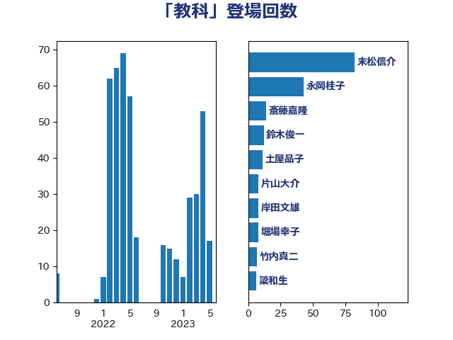

単語「教科」

| 末松信介 | 自由民主党 | 82 回 |
| 永岡桂子 | 自由民主党 | 43 回 |
| 斎藤嘉隆 | 立憲民主党 | 14 回 |
| 鈴木俊一 | 自由民主党 | 12 回 |
| 土屋品子 | 自由民主党 | 11 回 |
| 片山大介 | 日本維新の会 | 8 回 |
| 岸田文雄 | 自由民主党 | 8 回 |
| 堀場幸子 | 日本維新の会 | 8 回 |
| 竹内真二 | 公明党 | 7 回 |
| 簗和生 | 自由民主党 | 6 回 |
| 吉良よし子 | 日本共産党 | 6 回 |
| 鰐淵洋子 | 公明党 | 5 回 |
| 水岡俊一 | 立憲民主党 | 5 回 |
| 西岡秀子 | 国民民主党 | 4 回 |
| 舩後靖彦 | れいわ新選組 | 4 回 |
| 池田佳隆 | 自由民主党 | 4 回 |
| 宮口治子 | 立憲民主党 | 4 回 |
| 古賀千景 | 立憲民主党 | 4 回 |
| 上野通子 | 自由民主党 | 4 回 |
| 吉川元 | 立憲民主党 | 3 回 |
| 勝部賢志 | 立憲民主党 | 3 回 |
| 赤池誠章 | 自由民主党 | 2 回 |
| 平沼正二郎 | 自由民主党 | 2 回 |
| 平林晃 | 公明党 | 2 回 |
| 大石あきこ | れいわ新選組 | 2 回 |
| 大口善徳 | 公明党 | 2 回 |
| 嘉田由紀子 | 無所属 | 2 回 |
| 佐々木さやか | 公明党 | 2 回 |
| 伊藤孝江 | 公明党 | 2 回 |
| 伊藤孝恵 | 国民民主党 | 2 回 |
| 今井絵理子 | 自由民主党 | 2 回 |
| 串田誠一 | 日本維新の会 | 2 回 |
| 高木かおり | 日本維新の会 | 1 回 |
| 長友慎治 | 国民民主党 | 1 回 |
| 道下大樹 | 立憲民主党 | 1 回 |
| 角田秀穂 | 公明党 | 1 回 |
| 萩生田光一 | 自由民主党 | 1 回 |
| 白石洋一 | 立憲民主党 | 1 回 |
| 田島麻衣子 | 立憲民主党 | 1 回 |
| 熊谷裕人 | 立憲民主党 | 1 回 |
| 湯原俊二 | 立憲民主党 | 1 回 |
| 渡辺創 | 立憲民主党 | 1 回 |
| 浅川義治 | 日本維新の会 | 1 回 |
| 梅谷守 | 立憲民主党 | 1 回 |
| 林芳正 | 自由民主党 | 1 回 |
| 本田太郎 | 自由民主党 | 1 回 |
| 木原稔 | 自由民主党 | 1 回 |
| 日下正喜 | 公明党 | 1 回 |
| 掘井健智 | 日本維新の会 | 1 回 |
| 川田龍平 | 立憲民主党 | 1 回 |
| 小倉將信 | 自由民主党 | 1 回 |
| 堀内詔子 | 自由民主党 | 1 回 |
| 城井崇 | 立憲民主党 | 1 回 |
| 吉田とも代 | 日本維新の会 | 1 回 |
| 仁木博文 | 無所属 | 1 回 |
| 井上貴博 | 自由民主党 | 1 回 |
| 五十嵐清 | 自由民主党 | 1 回 |
| 中田宏 | 自由民主党 | 1 回 |